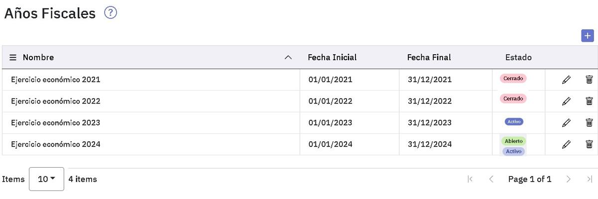
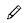
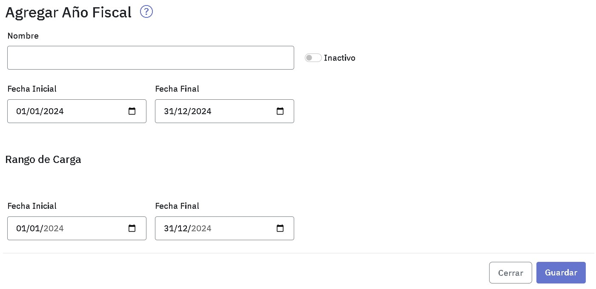
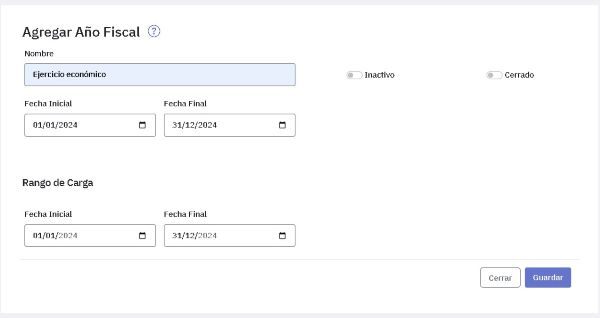
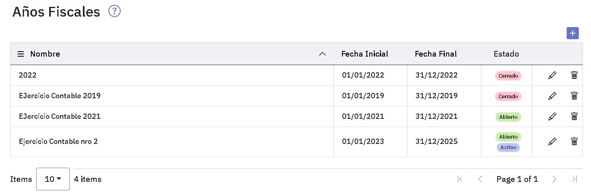
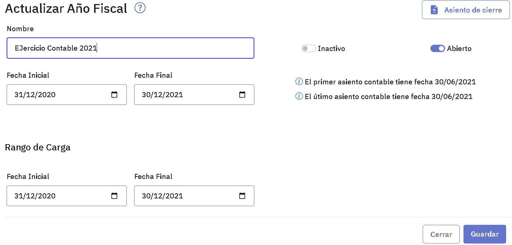
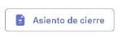
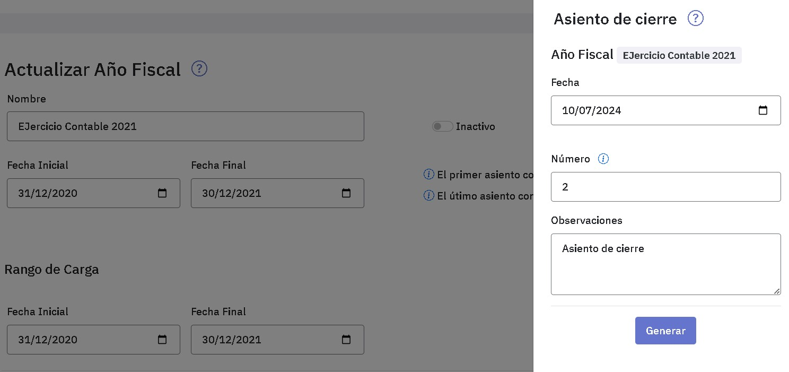

Año fiscal
Un año fiscal representa un ejercicio económico, por lo cual tiene una fecha de comienzo y de fin. Dentro de ese período se puede indicar un rango más acotado de fechas para la carga de asientos de modo de evitar imputar asientos fuera de ese rango.
Es posible definir varios años fiscales. Estos pueden estar en estado “Abierto” o “Cerrado”. Si bien es posible tener varios años fiscales abiertos, sólo uno de ellos puede estar activo. Este es el único año fiscal en el cual pueden registrarse asientos, Al indicar como activo a un año fiscal, automáticamente los restantes pasan a estar en estado inactivo.
Por ejemplo, si se está trabajando en el año fiscal 2024 y se necesita cargar un asiento en el año fiscal 2023, se pasa a activo este año fiscal, inactivándose automáticamente el año fiscal 2024.
Cabe señalar que el sistema no permitirá crear un año fiscal cuyas fechas desde/hasta abarquen parcial o totalmente el período definido para otro año fiscal ya creado. Para la emisión de informes pueden seleccionarse todos los años fiscales, activos o no, abiertos o cerrados.
Al ingresar a la ventana se exhiben los años fiscales definidos en el sistema con las fechas correspondientes a su inicio y fin y se indica cual de ellos está activo.

En esta pantalla podes crear un nuevo año fiscal, presionando . Para modificar uno definido previamente, presioná también podes eliminarlo con el botón .
Para crear un nuevo año fiscal tenes que completar en la pantalla siguiente el nombre, las fechas inicial y final del ejercicio económico que estas definiendo. En caso de querer acotar el rango de carga, podes modificar sus fechas inicial y final siempre y cuando éstas se encuentren comprendidas dentro de las fechas inicial y final del año fiscal.
La activación del ejercicio económico podes hacerla ahora o en una instancia posterior, cuando tengas que trabajar en él.

Cuando seleccionas un año fiscal presionando podes consultar sus datos y modificar sus fechas, siempre que no haya asientos fuera del rango determinado por las nuevas fechas. Para facilitarte el control, observá que en la pantalla se exhiben las fechas del primer y último asiento ingresados.

Asiento de cierre
El asiento de cierre correspondiente a un año fiscal se puede generar de manera automática. Para su generación, el sistema considerará todos los asientos registrados en el diario general para dicho año fiscal indicado.
Para la generación del asiento de cierre, el año fiscal se debe encontrar abierto.
El asiento de cierre contendrá todas las cuentas que hayan tenido movimientos durante ese período.
Las que presenten saldo deudor aparecerán con su saldo al Haber y las que presenten saldo acreedor aparecerán con su saldo al Debe. De este modo el saldo de todas las cuentas quedará en cero.
Este asiento generado automáticamente quedará indicado en el sistema como de tipo "Cierre".
El tener identificados a los asientos de cierre, posibilita emitir un balance, incluyendolos o no.
Al encontrarse identificado el asiento de Cierre se podrá, luego, indicar en el Balance si se desea (o no) incluir en el informe.
El asiento de cierre lo tenes que generar desde la pantalla siguiente presionando .

Vas a acceder a la siguiente ventana:

Presioná para acceder a la pantalla que te va a permitir ingresar la información necesaria para generar el archivo.

Los datos a completar son:
-
La fecha del asiento, trae por defecto la fecha actual y la fecha que ingreses debe estar dentro del rango de carga.
-
El numero de asiento, por defecto trae el siguiente numero disponible y podés modificarlo.
-
Si es necesaario, ingresá una observación.
Una vez que completaste los datos, presioná el botón "Generar". Se generará el asiento y verás un mensaje de confirmación. Desde allí dispondrás de un enlace para consultar el asiento generado.